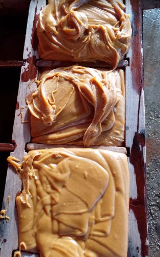
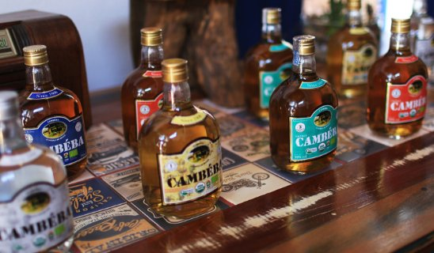
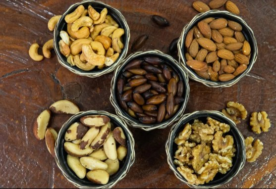
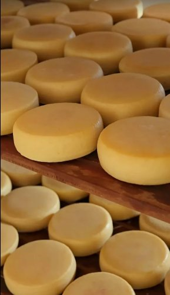

Aqui eu encontrei o verdadeiro frango caipira. Gigante. Tenho que deixar registrado a minha reação ao saborear a gigantesca coxa. Parabéns a equipe do empório caipira!!!
Catalão · Goiás
queijo no ponto, doce feito no tacho, cachaça de alambique.
Loja de produtos naturais na Lamartine, 1003. O que o povo da roça faz bem há gerações, vendido no balcão — com café passado te esperando.



Compra na loja · Retirada na porta · Entrega em Catalão
É só chamar no (64) 99986-4933
A venda
O Empório Caipira abriu em 2018 com uma teimosia: a de que o povo de Catalão merecia comprar queijo de verdade sem precisar viajar. Queijo minas no ponto — frescal, meia-cura, curado —, doce feito no tacho, cachaça de alambique conhecido, tempero moído do jeito que a avó fazia.
O frango caipira daqui é criado solto e é gigante — a Julia, que veio de São Paulo, pode confirmar. A linguiça de porco caipira sai junto, e a tapioca já tem freguesia fiel.
Tem também polpa de fruta pra suco de verdade, grão e castanha a granel, molho e compota da roça. E atrás do balcão, uma equipe que os fregueses fazem questão de elogiar nas avaliações: gentil, prestativa e sem pressa de te atender.
Pode vir comprar na loja, pedir pra retirar na porta ou receber em casa. E se o dia apertar, ainda dá tempo: a casa abre todo dia e só fecha às 18h30.
Tabela da casa
Não achou o que procura? Pergunta no WhatsApp que a gente dá um jeito.
Sem mistério
Quem prefere vir provar no balcão é sempre bem-vindo. Mas se o dia estiver corrido, o caminho é curto:
Manda mensagem no (64) 99986-4933 dizendo o que precisa — ou pede a lista do que tem hoje.
A equipe monta a sua sacola e te avisa quando estiver pronta, com o valor certinho.
Passa na porta e pega sem descer do carro, ou recebe em casa pela entrega em Catalão.
Era o que faltava na cidade: um lugar com tudo que existe de melhor no campo.— de uma avaliação no Google
Prosa de freguês
No Google, a casa soma nota 4,9 em 261 avaliações. As palavras que o povo mais escreve por lá: preço (19 vezes), queijo (17), temperos e doces. Melhor do que explicar é deixar os fregueses falarem —
Aqui eu encontrei o verdadeiro frango caipira. Gigante. Tenho que deixar registrado a minha reação ao saborear a gigantesca coxa. Parabéns a equipe do empório caipira!!!
Tudo caipira tem os melhores produtos! Os melhores doces caseiros, os melhores temperos!! Aqui encontramos o melhor de Goiás!
Sempre sou muito bem atendida. Todas as funcionárias são gentis e prestativas. Sou cliente fiel da tapioca rsrs e os demais produtos são impecáveis!!
Ler todas as avaliações no Google · Já é freguês? Deixa a sua também
Perguntas de balcão
Onde fica
A porta é aberta pra todo mundo: a casa acolhe a comunidade LGBTQ+ como acolhe qualquer vizinho de porta.
Pedir no WhatsApp